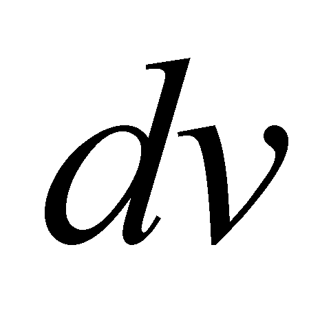
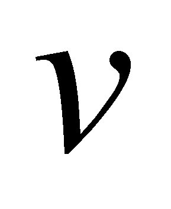
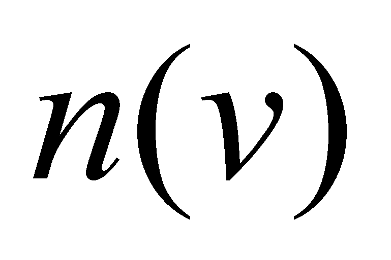
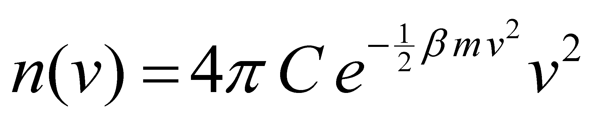
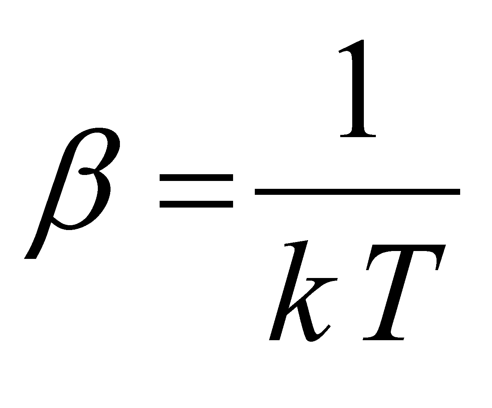
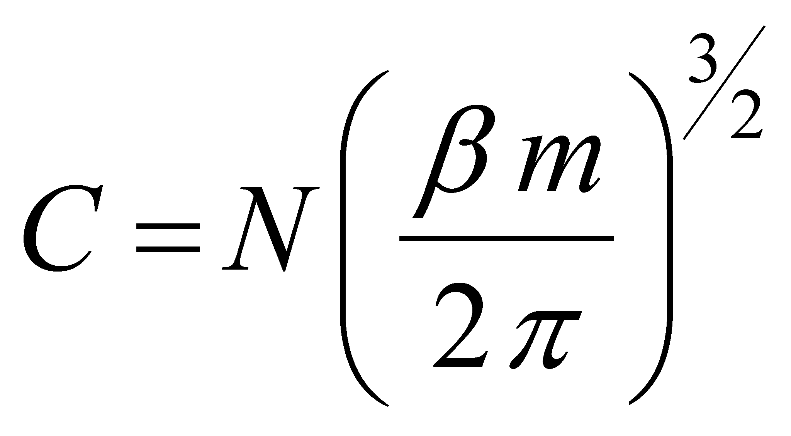
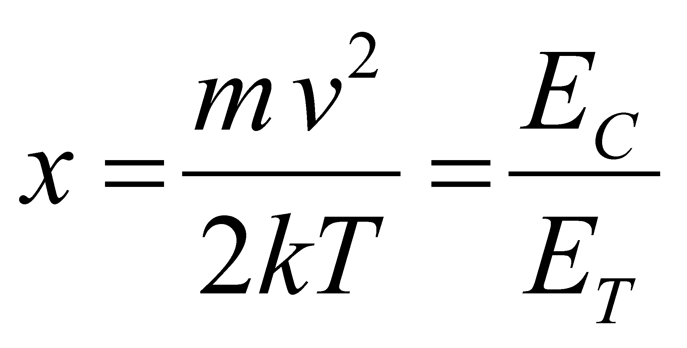
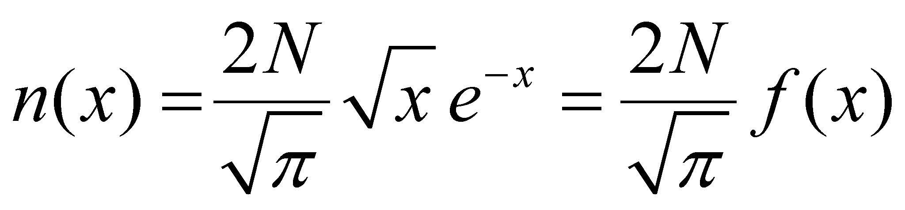
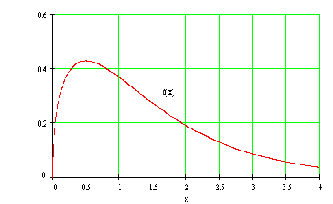
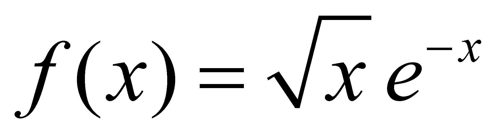

<!DOCTYPE HTML PUBLIC "-//W3C//DTD HTML 4.0 Transitional//EN">
<HTML>
<HEAD>
	<META HTTP-EQUIV="CONTENT-TYPE" CONTENT="text/html; charset=windows-1250">
	<TITLE>Introduction to objectual philosophy</TITLE>
	<META NAME="GENERATOR" CONTENT="OpenOffice.org 3.1  (Win32)">
	<META NAME="CREATED" CONTENT="20110408;22051900">
	<META NAME="CHANGED" CONTENT="20110408;22171100">
	<STYLE TYPE="text/css">
	<!--
		@page { margin: 0.79in }
		P { margin-bottom: 0.08in }
		P.sdfootnote { margin-left: 0.2in; text-indent: -0.2in; margin-bottom: 0in; font-size: 10pt }
		H2 { text-indent: 0.3in; margin-top: 0.11in; margin-bottom: 0.08in }
		H2.western { font-family: "Times New Roman", serif; font-size: 12pt; so-language: ro-RO; font-style: italic }
		H2.cjk { font-family: "Lucida Sans Unicode"; font-size: 12pt; font-style: italic }
		H2.ctl { font-family: "Tahoma"; font-size: 10pt; font-weight: normal }
		H3 { text-indent: 0.3in; margin-top: 0.08in; margin-bottom: 0.06in; text-align: justify }
		H3.western { font-family: "Times New Roman", serif; font-size: 12pt; so-language: ro-RO }
		H3.cjk { font-family: "Lucida Sans Unicode"; font-size: 12pt }
		H3.ctl { font-family: "Tahoma"; font-size: 10pt; font-weight: normal }
		A:link { so-language: zxx }
		A.sdfootnoteanc { font-size: 57% }
	-->
	</STYLE>
<script type="text/javascript">

  var _gaq = _gaq || [];
  _gaq.push(['_setAccount', 'UA-35887416-1']);
  _gaq.push(['_trackPageview']);

  (function() {
    var ga = document.createElement('script'); ga.type = 'text/javascript'; ga.async = true;
    ga.src = ('https:' == document.location.protocol ? 'https://ssl' : 'http://www') + '.google-analytics.com/ga.js';
    var s = document.getElementsByTagName('script')[0]; s.parentNode.insertBefore(ga, s);
  })();

</script>

</head>
<BODY LANG="ro-RO" DIR="LTR"><hr >
<div align="center">
          <table width="80%">
          <tbody>
                  <tr>
                    <td>
                        <a href="http://filosofia.obiectuala.ro/en/"></a>
                    </td>
                  </tr>
           </tbody>
       </table>
</div>
       <hr >
<H3 CLASS="western" STYLE="page-break-before: always">X.24.8.2
Maxwell distribution</H3>
<P STYLE="margin-bottom: 0in"><SPAN LANG="ro-RO">As regards</SPAN><SPAN LANG="ro-RO">
the atomic medium (for simplicity, we take the case of an inert gas
which does not produce molecules), the state attribute of the energy
which is attributed to an element (by considering equal masses for
all the atoms) is the velocity, and since we are talking about
energy, only the modulus of this velocity is relevant. Because we are
discussing about the modulus of the atoms velocity, in case of a
medium which reaches a certain temperature, we know that there is a
distribution of this modulus on the total atoms&rsquo; set, that is
</SPAN><SPAN LANG="ro-RO"><I>Maxwell distribution</I></SPAN><SPAN LANG="ro-RO">.</SPAN></P>
<P STYLE="margin-left: 0.2in; margin-right: 0.2in; text-indent: 0.39in; margin-bottom: 0in">
<FONT COLOR="#000000"><FONT FACE="Arial, sans-serif"><FONT SIZE=2 STYLE="font-size: 9pt">Comment
X.24.8.2.1: If we are taking into account the definition of the
abstract object called <I>distribution</I>, which was mentioned in
chapter 2 of the present paper, by also identifying according to this
definition, which is the support attribute and which is the
distributed attribute, as regards the Maxwell distribution, we shall
find that the <U>velocity is the support attribute</U> (independent
variable) and the distributed attribute (dependent) is the <U>number
of atoms</U> (atomic population) which have the velocity rate ranged
within the elementary support interval. Therefore, we cannot talk
about the distribution of the atoms velocity (because not the
velocity is the distributed attribute), but about the distribution of
the number of atoms across the support domain of their <I>velocity
modulus</I>. If we actually consider that the distribution depending
on velocity is a representation of the atoms impulse distribution, we
may say that the Maxwell distribution is in fact a precursor of the
<U>energy distribution</U> of the atoms from a medium, in this case,
the kinetic energy is the distribution&rsquo;s support attribute.
Also, the support attribute (velocity) in case of Maxwell
distribution has the positive line of the axis of real numbers as its
range of values, which is therefore a continuous set, whereas the
distributed attribute (the finite set of the medium&rsquo;s atoms)
has a positive segment of the set of integers (natural numbers) as
its values which is therefore a discrete set. However, because the
atoms numbers involved into the distribution are very high, they can
be written only by using the scientific notation (with decimal
mantissa and exponent), the domain of the distributed values seems to
be continuous.</FONT></FONT></FONT></P>
<P STYLE="margin-bottom: 0in"><SPAN LANG="ro-RO">The density of this
distribution on an elementary support domain with a </SPAN>
<SPAN LANG="ro-RO">
size and with the internal reference reaching the value </SPAN>
<SPAN LANG="ro-RO">
(density which means the number </SPAN>
<SPAN LANG="ro-RO">
of atoms which have its velocity included within the associated
support domain) is (according to the textbooks of statistic
physics</SPAN><SPAN LANG="ro-RO"><A CLASS="sdfootnoteanc" NAME="sdfootnote1anc" HREF="#sdfootnote1sym"><SUP>1</SUP></A>39</SPAN><SPAN LANG="ro-RO">):</SPAN></P>
<P ALIGN=JUSTIFY STYLE="text-indent: 0.3in; margin-bottom: 0in">		(X.24.8.2.1)</P>
<P ALIGN=JUSTIFY STYLE="margin-bottom: 0in">where:</P>
<P ALIGN=JUSTIFY STYLE="text-indent: 0.3in; margin-bottom: 0in">		(X.24.8.2.2)</P>
<P STYLE="margin-bottom: 0in">and:</P>
<P ALIGN=JUSTIFY STYLE="text-indent: 0.3in; margin-bottom: 0in">
		(X.24.8.2.3)</P>
<P STYLE="margin-bottom: 0in"><SPAN LANG="en-GB"><I>N</I></SPAN><SPAN LANG="en-GB">
is the total number of atoms inside the medium, </SPAN><SPAN LANG="en-GB"><I>m
</I></SPAN><SPAN LANG="en-GB">is the atoms mass, </SPAN><SPAN LANG="en-GB"><I>T</I></SPAN><SPAN LANG="en-GB">
the medium&rsquo;s temperature and </SPAN><SPAN LANG="en-GB"><I>k</I></SPAN><SPAN LANG="en-GB">
Boltzmann&rsquo;s constant. If we are making (similarly to the case
of Plank distribution) a variable change in the relation X.24.8.2.1:</SPAN></P>
<P ALIGN=JUSTIFY STYLE="text-indent: 0.3in; margin-bottom: 0in">		(X.24.8.2.4)</P>
<P STYLE="margin-bottom: 0in"><SPAN LANG="en-GB">where </SPAN><I>x</I><SPAN LANG="en-GB">
is also a scalar quantity (ratio of the two energies per element, the
kinetic and thermal one), we shall get a </SPAN><SPAN LANG="en-GB"><I>normalized
Maxwell distribution</I></SPAN><SPAN LANG="en-GB">:</SPAN></P>
<P ALIGN=JUSTIFY STYLE="text-indent: 0.3in; margin-bottom: 0in">		(X.24.8.2.5)</P>
<P LANG="" ALIGN=CENTER STYLE="margin-bottom: 0in"></P>
<P STYLE="margin-top: 0.08in"><FONT SIZE=3><I>Fig. X.24.8.2.1</I></FONT></P>
<P STYLE="margin-bottom: 0in">where <I>
</I>
<SPAN LANG="en-GB">is displayed in the figure X.24.8.2.1, with a
maximum peak at the value </SPAN><SPAN LANG="en-GB"><I>x</I></SPAN><SUB><SPAN LANG="en-GB"><I>R</I></SPAN></SUB><SPAN LANG="en-GB"><I>=0.5</I></SPAN><SPAN LANG="en-GB">
(the internal reference of the normalized distribution), namely, when
the kinetic </SPAN><SPAN LANG="en-GB"><U>free translation</U></SPAN><SPAN LANG="en-GB">
energy per element of atomic G medium (which c</SPAN>orresponds to
the distribution&rsquo;s density of this energy on the atoms set) is
half from the energy <I>kT</I>, contained into the photonic medium
which is under an equilibrium state. This fact shows us that, in
order to exist an equilibrium between the thermal energy density
(which has both the component T<A CLASS="sdfootnoteanc" NAME="sdfootnote2anc" HREF="#sdfootnote2sym" SDFIXED><SUP>1</SUP></A>40
and R), and the density of the kinetic energy deployed by atoms, the
rest of the thermal energy (the component R of the photons) must be
in equilibrium with the component R of the atoms&rsquo; kinetic
energy (free energy as well).</P>
<P STYLE="margin-left: 0.2in; margin-right: 0.2in; text-indent: 0.39in; margin-bottom: 0in">
<FONT COLOR="#000000"><FONT FACE="Arial, sans-serif"><FONT SIZE=2 STYLE="font-size: 9pt"><SPAN LANG="en-US">Comment
X.24.8.2.2: According to the classification of the media in the three
fundamental classes S, L and G, now we know that a </SPAN><SPAN LANG="en-US"><U>free</U></SPAN><SPAN LANG="en-US">
translation energy is specific only to the elements of G media, so
that the thermal energy from the inner photonic medium shall be
distributed to the two possible types of kinetic energy (T and R). In
case of the L media, the free translation is not allowed any longer,
so that the thermal energy must be in equilibrium only with the
kinetic energy (quasi-free) R of the atoms and with the forced
vibration energy T. In case of S media, where neither the free motion
R is allowed, the thermal energy shall be in equilibrium only with
the forced vibration energy (both T and R). The above mentioned
assertions are valid for atomic media; for the molecular media, the
intramolecular vibrations must be added, each one with specific
energy T and R.</SPAN></FONT></FONT></FONT></P>
<P STYLE="margin-bottom: 0in">As we have seen in the previous
sections, the density of the thermal energy (density of the photonic
stochastic EF) in a specific medium does not depend on the medium
type, but only on its temperature, the thermal energy being
exclusively contained into the interstitial medium of the thermal
photons. The condition required so that this flux density to be in
equilibrium with the density of the kinetic fluxes per element of the
atomic or molecular medium, makes however that this equilibrium to be
reached in different conditions, at the same amount of thermal energy
input, the kinetic parameters of the medium&rsquo;s elements and the
equilibrium temperature depending on the medium type. Otherwise
speaking, in a medium (for instance, an atomic one) which is
theoretically placed at absolute zero temperature (which means that
there are no thermal photons inside it), if we are injecting a
quantity of thermal energy (an external thermal photon flux), and in
case that the heat losses of the medium are insignificant, this
thermal energy shall be distributed due to repeated interactions
between the photonic and atomic medium. As a result of this
auto-distribution, when the equilibrium state between the photonic
stochastic flux and the atomic stochastic flux will be reached, we
shall be dealing (depending on the medium type S, L or G) with more
energy categories:</P>
<UL>
	<LI><P STYLE="margin-bottom: 0in">Thermal energy (evidenced by
	temperature);</P>
	<LI><P STYLE="margin-bottom: 0in">Free T energy (evidenced by
	pressure and which can be found only into the G media);</P>
	<LI><P STYLE="margin-bottom: 0in">Free R energy (existing only to
	the G and L media); 
	</P>
	<LI><P STYLE="margin-bottom: 0in">Vibration energy (T and/or R
	depending on the medium type G, L or S). 
	</P>
</UL>
<P STYLE="text-indent: 0.3in; margin-bottom: 0in">Obviously, the sum
of all these energy components shall be equal to the thermal energy
amount which was initially introduced and which is supposed to be
preserved within the medium.</P>
<P STYLE="margin-left: 0.2in; margin-right: 0.2in; text-indent: 0.39in; margin-bottom: 0in">
<FONT COLOR="#000000"><FONT FACE="Arial, sans-serif"><FONT SIZE=2 STYLE="font-size: 9pt"><SPAN LANG="en-US">Comment
X.24.8.2.3: The above-mentioned discussion on the thermal </SPAN><SPAN LANG="en-US">energy
distribution into other energy forms does not depend on the type of
atoms which make-up the atomic medium, but a significant remark must
be done. Depending on the heat amount which is inserted into the
atomic medium, as a result of its distribution into all the possible
above-mentioned energy forms, the atom type which creates the medium
is very important as regards the medium class (S, L, G) which would
result at the moment when the thermal equilibrium is reached. This
dependence is due to the uneven spatial distribution (except the
atoms of the inert gases) of the electronic orbitals placed on the
last layer (the external one), distribution which will produce one or
more preferential directions of the future interactions with the
other atoms. The more directional and powerful these interactions
will be, the more reduced will be the means of subsequent rotation of
its elements (for example, the case of the hardly fusible materials
or the carbon).</SPAN></FONT></FONT></FONT></P>
<P STYLE="margin-bottom: 0in">We must clearly underline that the
Maxwell distribution is valid only for G media, because, as we have
mentioned before, only these media can have a <U>free translation</U>
of the medium&rsquo;s elements. As for the other class of media (S,
L), only <U>forced translations</U> (vibrating ones, because there
are permanent interactions between elements) can be found. The fact
that the distribution of the velocity rates was established as
regards the atoms or molecules of some solids or liquids, it does not
mean that that particular distribution was valid during the vapour
phase of those substances.</P>
<P LANG="en-US" STYLE="margin-left: 0.2in; margin-right: 0.2in; text-indent: 0.39in; margin-bottom: 0in">
<FONT COLOR="#000000"><FONT FACE="Arial, sans-serif"><FONT SIZE=2 STYLE="font-size: 9pt">Comment
X.24.8.2.4: It couldn&rsquo;t be different anyway, because the
velocity selector used for the determination of the atomic or
molecular speed rates runs only with atomic or molecular beams (beams
of the single elements of the substance) generated by the gaseous
phase of the trial substance.</FONT></FONT></FONT></P>
<H2 CLASS="western"></H2>
<DIV ID="sdfootnote1">
	<P CLASS="sdfootnote"><A CLASS="sdfootnotesym" NAME="sdfootnote1sym" HREF="#sdfootnote1anc">1</A>39
	 <B>F. Reif</B><I> - Cursul de fizicã Berkeley vol. V - Fizicã
	statisticã</I>, Editura Didacticã ºi Pedagogicã - Bucureºti, 1983</P>
</DIV>
<DIV ID="sdfootnote2">
	<P CLASS="sdfootnote"><A CLASS="sdfootnotesym" NAME="sdfootnote2sym" HREF="#sdfootnote2anc">1</A><SPAN LANG="en-GB">40</SPAN><SPAN LANG="en-GB">
	Attention&nbsp;! Do not mistake the symbol T of the translation
	(normal font) with the symbol </SPAN><SPAN LANG="en-GB"><I>T</I></SPAN><SPAN LANG="en-GB">
	of the temperature (italics).</SPAN></P>
</DIV>
<div class="NAVFOOTER">
            <hr align="left" width="100%" >
            <table summary="Footer navigation table" border="0" cellpadding="0" cellspacing="0" width="100%">
                <tbody><tr>
                        <td align="left" valign="top" width="33%"><a href="x2481.html" accesskey="P"></a></td>
						<td align="center" valign="top" width="33%"><a href="../index.html" accesskey="I"><b>INDEX</b></a></td>
                            <td align="right" valign="top" width="33%"><a href="x249.html" accesskey="N"></a></td>
                    </tr>
            </tbody></table>
            <hr >
</div>
        <div align="center" class="color">
            <p>Copyright &copy; 2006-2011 Aurel Rusu. All rights reserved.</p>
        </div>
</BODY>
</HTML>